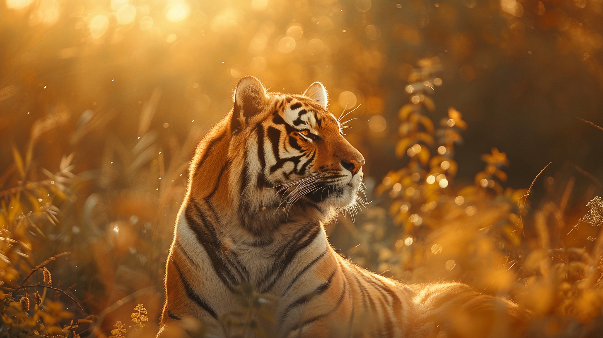
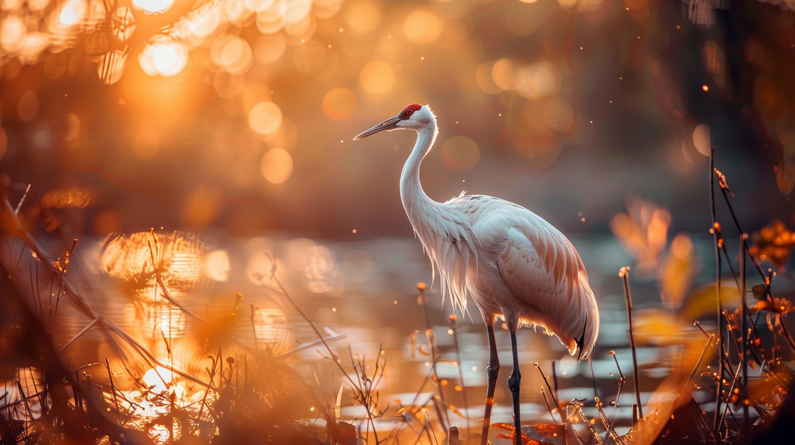
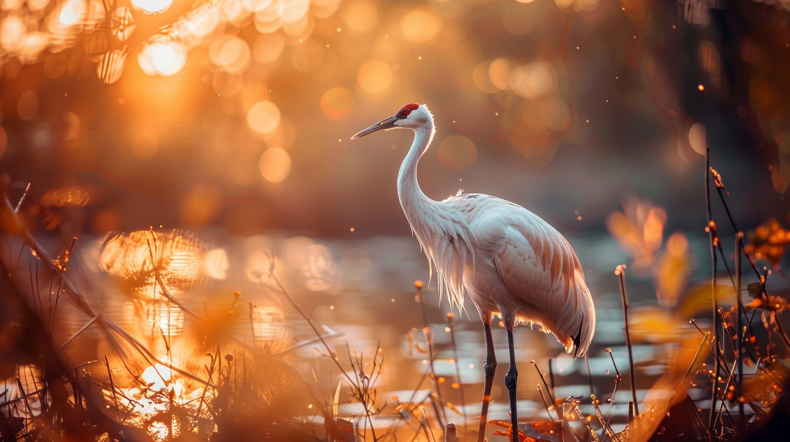
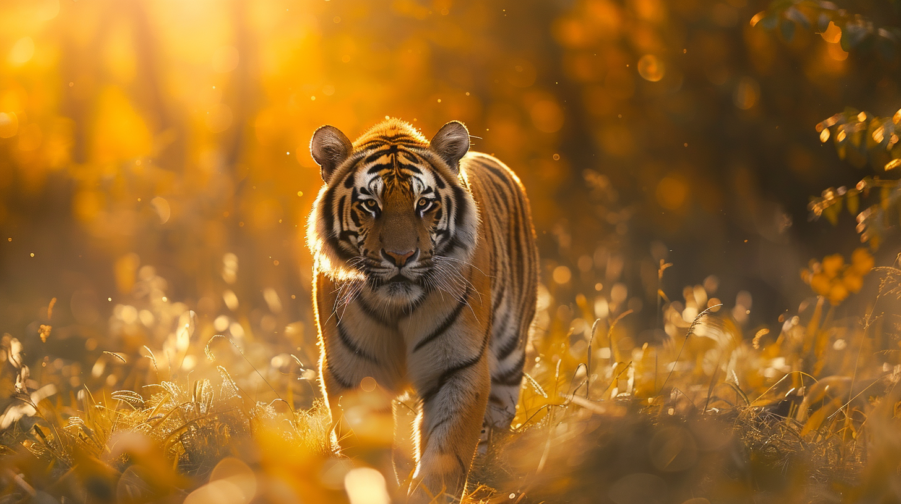
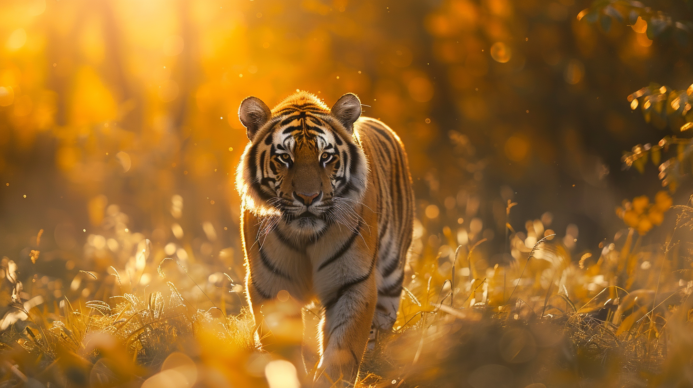
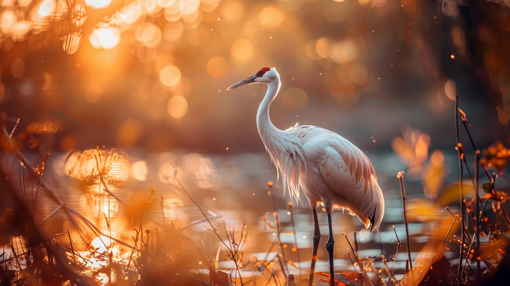
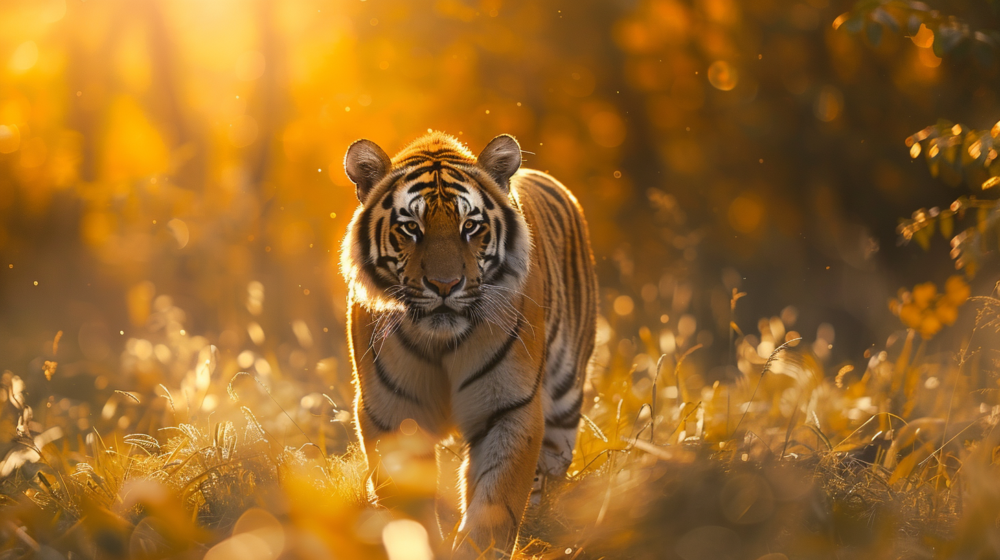
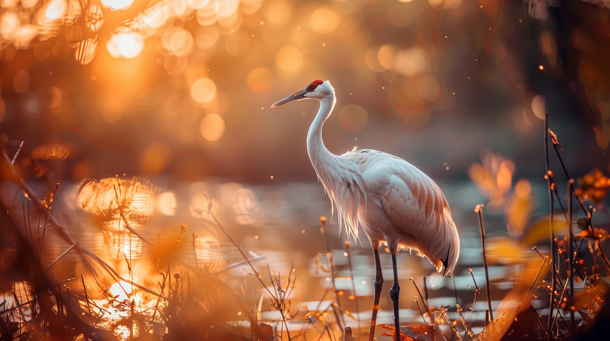
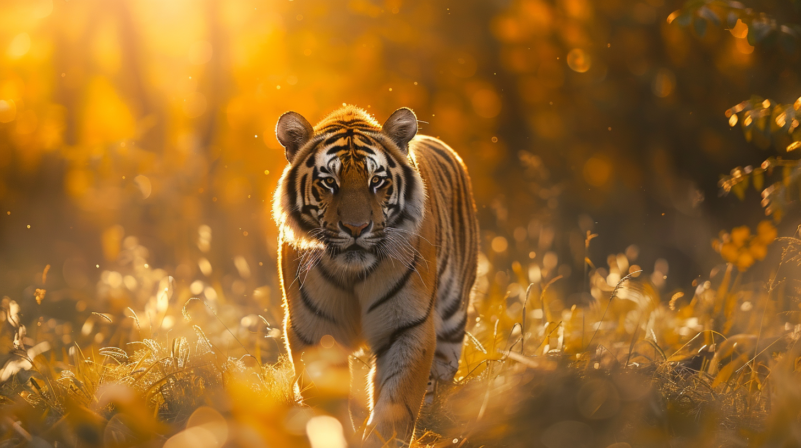

 

 



In this section Selena Montgomery's profound connection with wildlife photography. With China and Africa as her latest destinations, Selena passionately captures the essence of wild creatures in their natural habitats, portraying their unique personalities through her lens with heartfelt dedication and reverence.
Serena's journey through China was a testament to her deep reverence for its culture and biodiversity. Each moment spent with graceful cranes, gentle pandas, and lively monkeys filled her with awe. Through her photography, she endeavored to preserve the splendor of China's wildlife, a mission she accomplished with passion and dedication, capturing the heart of this enchanting country.
Moreover, Serena's immersion in China's diverse culture left an indelible mark on her. She found herself captivated by the intricate rituals, profound philosophies, and vibrant traditions woven into the fabric of everyday life. From sampling regional cuisines to partaking in ancient ceremonies, Serena embraced each opportunity to learn and connect with the people and traditions of China. Her journey not only enriched her photography but also expanded her understanding of the world, leaving her with cherished memories and a deep appreciation for the beauty of cultural diversity.


Drawn by the untamed beauty of Africa, Serena embarked on an unforgettable journey. Inspired by the rich tapestry of African culture and the raw majesty of its landscapes, she sought to capture the essence of its iconic wildlife. From the regal presence of lions to the gentle grace of elephants, each encounter filled her with reverence. Through her lens, Serena endeavored to preserve Africa's magnificence, succeeding in immortalizing its splendor in every frame.
Moreover, Serena's journey through Africa offered profound insights into the continent's rich tapestry of cultures. Immersed in the traditions and customs of diverse communities, she learned the value of community, resilience, and connection to the land. From the rhythmic beats of tribal dances to the warmth of village hospitality, Serena's experiences deepened her appreciation for the human spirit and the interconnectedness of all life. Each interaction became a cherished chapter in her journey, enriching her understanding of the world and inspiring her to continue bridging cultures through her photography.